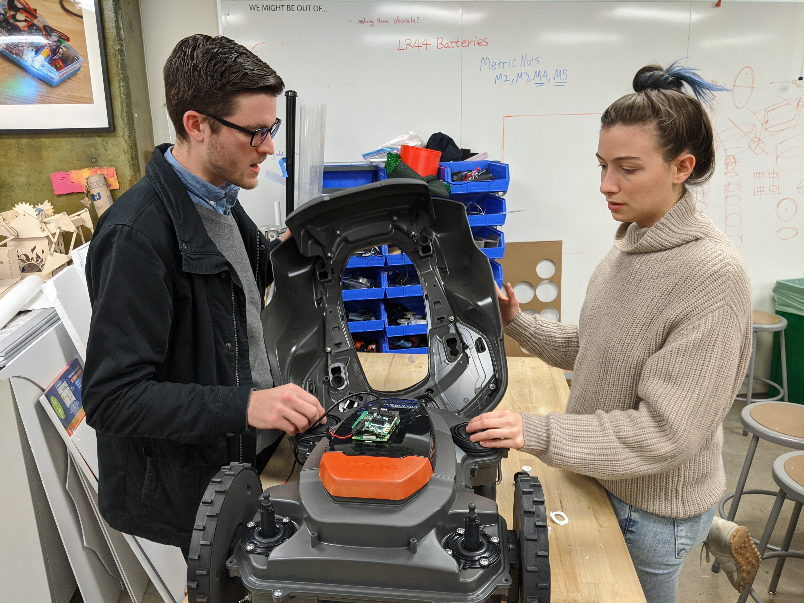
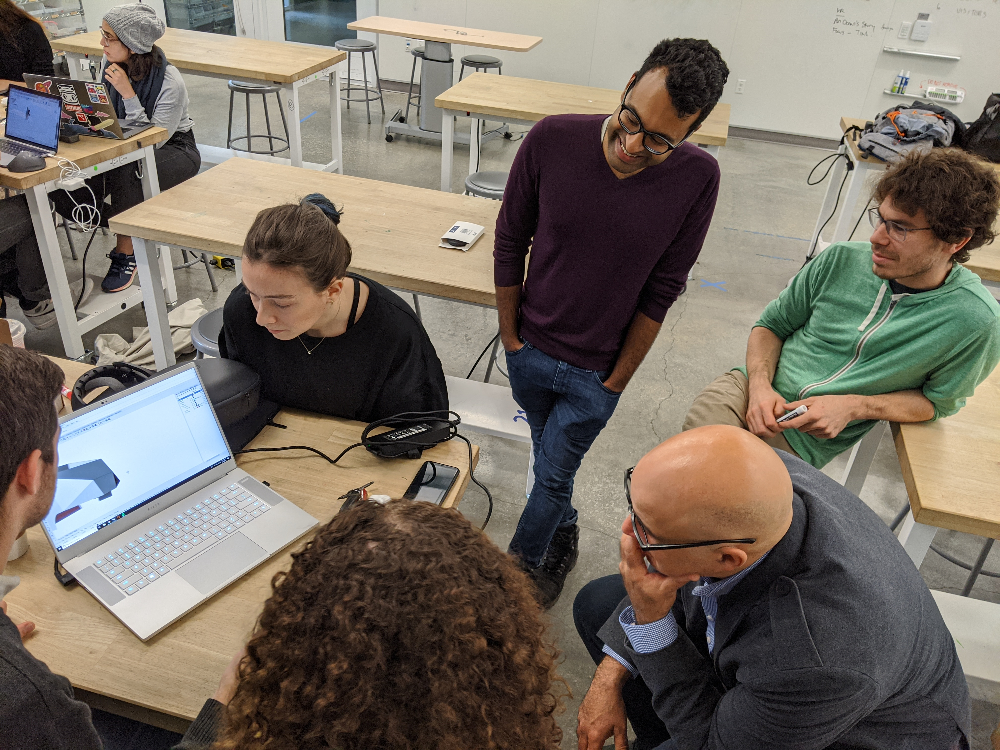
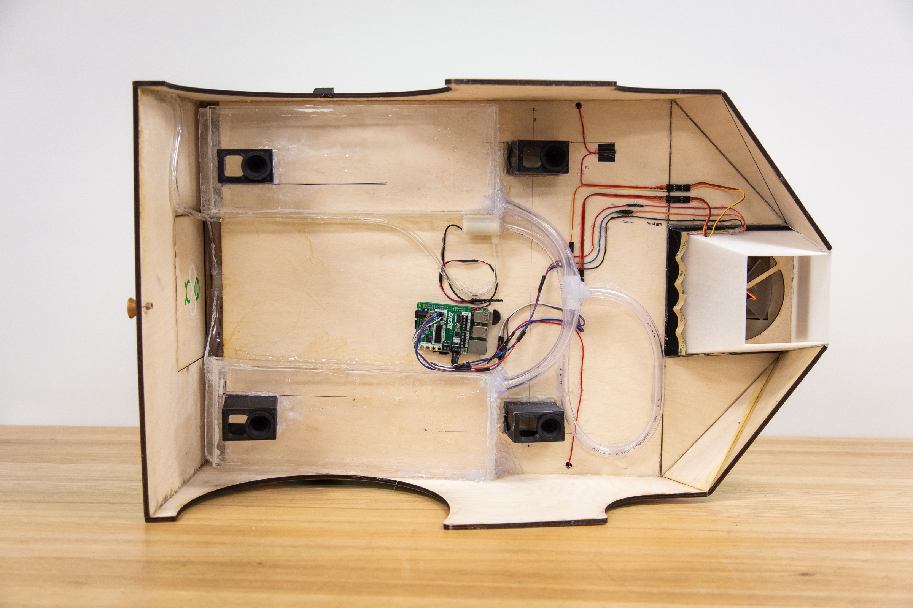
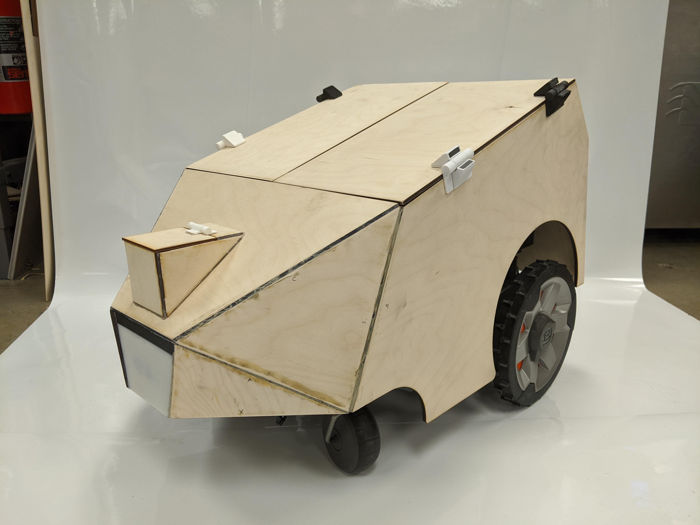
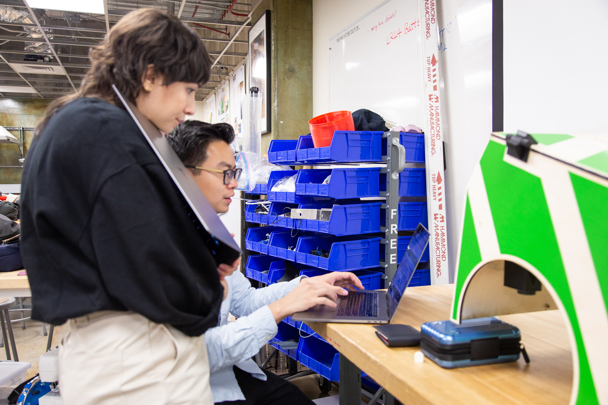
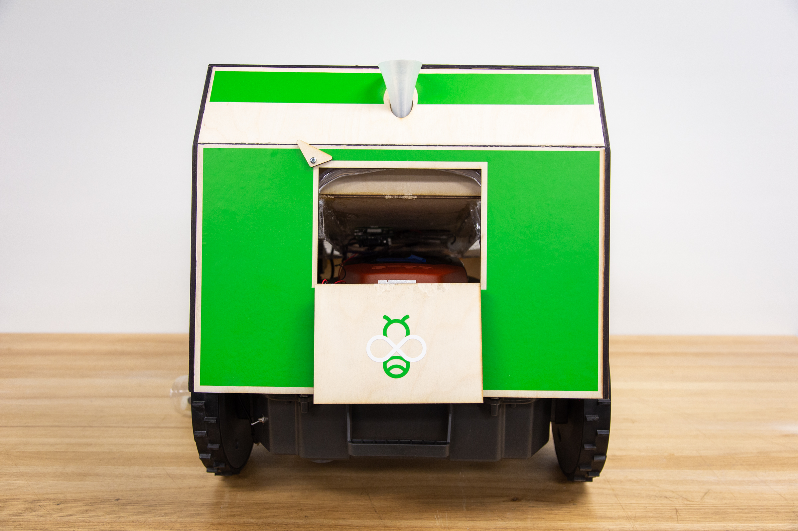
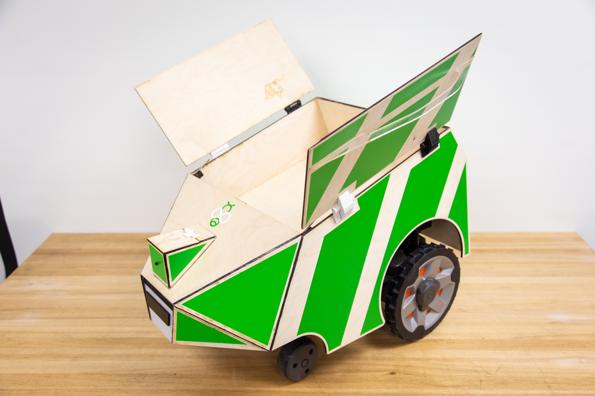

<!DOCTYPE html><html lang="en"><head><meta charset="utf-8"><meta name="viewport" content="width=device-width, initial-scale=1.0"><title>cdste</title><link rel="stylesheet" type="text/css" href="//fonts.googleapis.com/css?family=Ubuntu+Mono|Lato"><link rel="stylesheet" href="../../res/main.css"><link rel="stylesheet" href="../../res/grid.css"><link rel="stylesheet" href="../../res/project.css"></head></html><body><div class="project-page"><div class="body_div"><div class="vertical_center"><a href="../../index.html"><div id="site_title">$ cd Ste<div class="box blink"> </div></div></a><div class="project-title">BeeBop</div><div class="role"><span class="bold">Role:</span>ideation, user needs, research, Raspberry-Pi, prototyping, ros</div><div class="doc-link"><a href="https://docs.google.com/document/d/e/2PACX-1vSrdqFArYmObY1NmFu2Xenmlr1rfCD-zCEno9mVXL9Rm6g3BYGe0QWOvDcKTx5UtWO91NvYsCKgPe_0/pub" target="_blank">Process Documentation</a></div><iframe width="560" height="315" src="https://www.youtube.com/embed/JFbEzHeDYeg" frameborder="0" allow="accelerometer; autoplay; encrypted-media; gyroscope; picture-in-picture" allowfullscreen="allowfullscreen"></iframe><div class="blurb">In the world today, over 90 Billion pounds of food ends up wasted, with 31% of food supply ends up in landfill. Currently food sitting in landfills can’t breakdown correctly and instead releasing toxic greenhouse gases.
Composting offers an amazing alternative. It’s fantastic for the environment, supercharging plant growth and protecting against soil erosion; but compositing can be difficult to maintain.<br><br>BeeBot is a land-mowing robot transformed into a composting machine built to make home composting easier.
The robotic composter arrives at your door to collect compost and protect the environment. BeeBot takes your compost to a secret area where your compost is used to nurture trees and other flowering plants. The secret area is unique to each BeeBot, with each BeeBot having seeds and watering components to tend to its plants. BeeBot can be requested via the app or you can schedule BeeBot on its regular route.
BeeBot. The Composting Robot.</div><div data-colcade="columns: .grid-col, items: .grid-item" class="grid"><div class="grid-col grid-col--1"></div><div class="grid-col grid-col--2"></div><div class="grid-col grid-col--3"></div><div class="grid-item"><div class="grid-img"></div></div><div class="grid-item"><div class="grid-img"></div></div><div class="grid-item"><div class="grid-img"></div></div><div class="grid-item"><div class="grid-img"></div></div><div class="grid-item"><div class="grid-img"></div></div><div class="grid-item"><div class="grid-img"></div></div><div class="grid-item"><div class="grid-img"></div></div></div><iframe src="https://docs.google.com/presentation/d/e/2PACX-1vSxDVELTvOMNIlIBbTBLZLfKYX5yX9rWpL1IElDrQo6isZdbA_y6tmw5gZ-7M5RNs8O4z1i95Y5jHyS/embed?start=true&amp;loop=true&amp;delayms=3000" frameborder="0" allowfullscreen="true" mozallowfullscreen="true" webkitallowfullscreen="true"></iframe></div></div></div><script src="https://ajax.googleapis.com/ajax/libs/jquery/1.8.3/jquery.min.js"></script><script src="https://unpkg.com/colcade@0/colcade.js"></script><script src="../../res/app.js"></script></body>